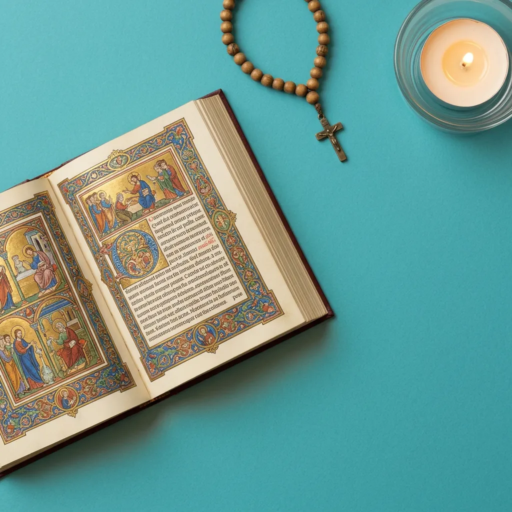
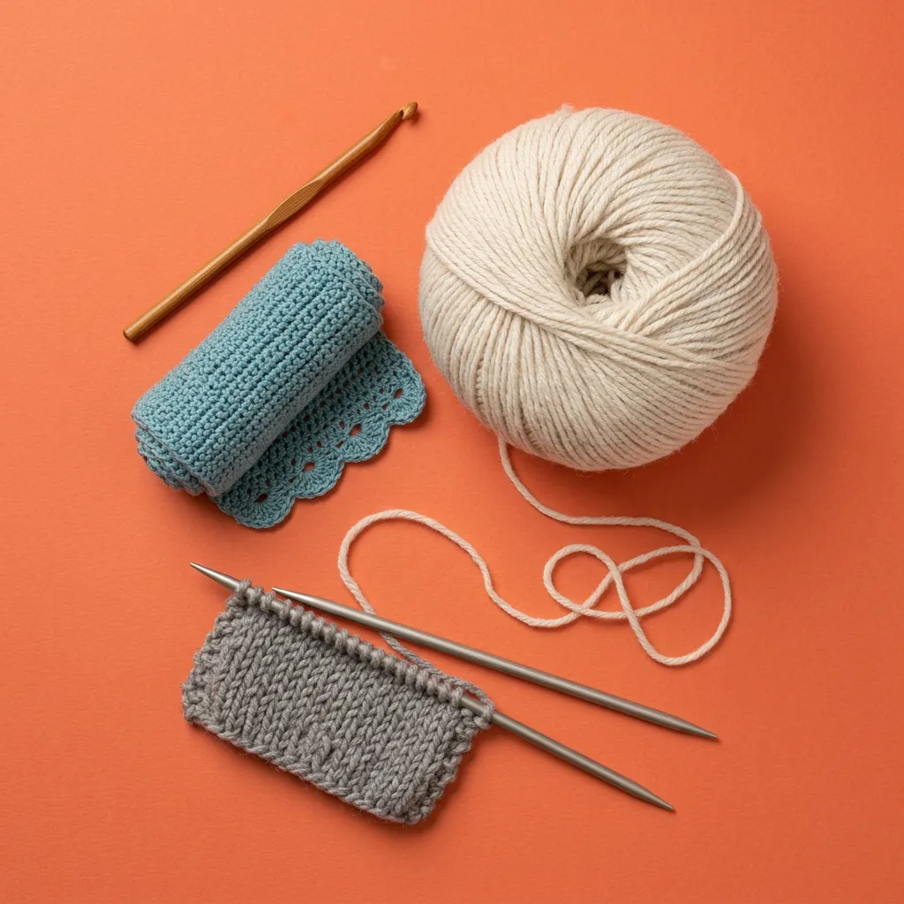

A
Voortgangsbalk
eenvoudigst
Eén groot getal, één balk die bijna vol is, één knop. Leest in twee seconden.
Sterk
- Kleinste bouw, één Blade-partial
- Werkt op elk scherm
Zwak
- Voelt wat als een inzamelactie
- Zegt niet wat er ontbreekt
Past bij
- Korte looptijd, weinig risico
B
Prikbord met 500 vakjes
meest feestelijk
Elk gedeeld idee is een gekleurd vakje, de laatste 30 zijn nog open.
Hover toont titel en naam van wie het deelde. Zo zie je de gemeenschap groeien, niet alleen een getal.
Samen naar 500
470 ideeën gedeeld door collega's
Nog 30 open plekjes. Vul jij er eentje?
Deel een activiteit →
#470 · Woorden uit de tijd van toen · Kitty
Sterk
- Past bij de prikbord-/scrapbookstijl
- Elk vakje is iemand: trots en erbij horen
Zwak
- 500 vakjes zijn op gsm piepklein (10 kolommen dan)
- Hover werkt niet op touch
Past bij
- De 500ste fiche als moment vieren (vakje springt in)
C
Teller + waar het nog dun is
aanbevolen
Het blok behoudt de vorm van nu (drie of vier fotokaarten) maar toont de initiatieven met de minste fiches, met een teller erboven.
Dezelfde boodschap als de mail: "Bij andere vinden collega's nog bijna niets."
Feest én een concrete vraag.
3 fichesFilm & theater →

4 fichesGeloof & spiritualiteit →
4 fichesHandwerken →
470
activiteiten gedeeld
door collega's
Sterk
- Hergebruikt
MilestoneCallContent (needsLove) - Stuurt bijdragen naar gaten, niet naar nog een quiz
- Kaartvorm blijft, dus geen breuk op de pagina
Zwak
- Minder "feest" dan B
- Testdata ("Perspiciatis…") moet in productie zeker weg zijn
Past bij
- Het doel achter 500: een rijkere bibliotheek, geen getal
C+
Vier varianten op C: 500 staat vooraan
nieuw
Zelfde kaarten met de initiatieven met de minste fiches, maar "500 activiteiten" zit telkens in de kop of in een groot beeld, niet in een eyebrow.
C1 · De kop zegt het
Samen naar 500 activiteiten
We staan op 470. Nog 30 te gaan. Hier zoeken collega's nog ideeën:
3 fichesFilm & theater →
4 fichesGeloof & spiritualiteit →
4 fichesHandwerken →
C2 · Een groot 500 dat volloopt
500
500
nog 30 te gaan
Help ons de 500 activiteiten vol te maken
470 gedeeld door collega's. Deze initiatieven kunnen er nog een paar gebruiken:
3Film & theater →
4Geloof →
4Handwerken →
C3 · Meetlint met een vlag op 500
Hier vind je nog weinig. Weet jij er iets voor?
3 fichesFilm & theater →
4 fichesGeloof & spiritualiteit →
4 fichesHandwerken →
C4 · Vlaggetjes, zonder feestbelofte
500
Bijna 500 activiteiten!
470 ideeën van collega's staan klaar. Nog 30 en de teller staat op 500. Deze thema's hebben nog weinig fiches.
3 fichesFilm & theater →
4 fichesGeloof & spiritualiteit →
4 fichesHandwerken →
C1
- Duidelijkst, minst nieuw ontwerp
- Balk dubbelt het getal, mag ook weg
C2 · C3
- C2: het 500-beeld is de teller zelf, sterk herkenbaar
- C3: meetlint toont "bijna" het best, vlag = het feest
C4
- Feestelijk beeld, de tekst belooft geen feest
- Gecentreerd, breekt met de rest van de homepage
D
Scheurkalender + wie deelde
meest menselijk
Een afscheurblaadje met het aantal dat nog nodig is, naast de voornamen van wie recent deelde.
Bij elke nieuwe fiche gaat er een blaadje af. Verwijst naar de themakalender die er al is.
Nog
30
activiteiten tot 500
Samen naar 500
Elke fiche scheurt er een blaadje af
Net gedeeld door:
KKitty · Woorden uit de tijd van toen
BBillie · Associatie memory
BBillie · Beweegbingo!
Scheur jij het volgende af? →
Sterk
- Namen = erkenning, de kern van het merk
- Uitgesproken handgemaakt
Zwak
- Recente fiches zijn soms weken oud: "net gedeeld" klopt dan niet
- Toont namen publiek op de homepage
Past bij
- Als er nu veel binnenkomt (na de mail)
Jouw keuze
Vijf beslissingen
Kies, en stuur alles in één keer terug.